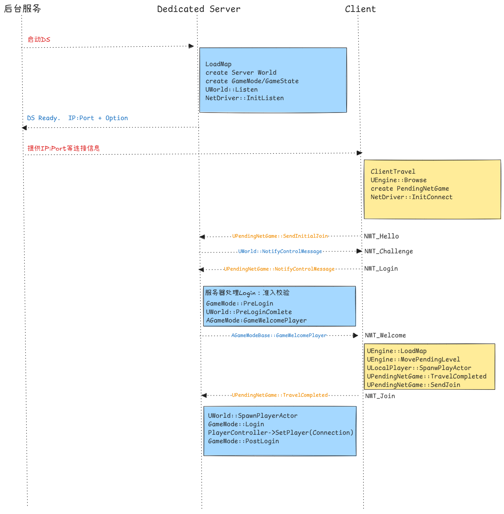

网络笔记二：DS和客户端连接
零：登录流程
下文会参照该时序图分析，大致分成三个阶段
- DS启动并就绪，等待客户端连接
- 客户端发起连接请求，和DS进行握手通信
- 地图加载完成后进行Join入场

概念解析
Dedicated Server
Dedicated Server大概可以翻译成专用服务器或者独立服务器。我觉得这个名字主要是和Listen Server区分开，后者意思是一个玩家客户端同时也是服务器，这个进程既有本地玩家、有渲染有输入、也接受其他客户端的连接。Dedicated则更突出体现它是单独的服务器进程。
对一个常见的单局游戏，后台服务、DS 和客户端的关系大致是
- 后台服务启动远端的DS进程，指定地图和端口
- DS LoadMap之后创建出Server World，监听客户端连接
- 客户端会先建立PendingNetGame的连接态，客户端拿到地址和端口后，请求建立连接，双方创建好Connection，完成登录请求。
- 客户端LoadMap，创建Client World，进入对局。
`PendingNetGame`
UPendingNetGame 是客户端连接远端服务器时的过渡对象。它存在于 ClientTravel 之后、正式 Client World 建立之前，负责持有目标 URL、临时 PendingNetDriver、到服务器的 ServerConnection、连接错误、地图名以及是否连接成功等状态。
`Control Message`
NMT_Hello、NMT_Challenge、NMT_Login、NMT_Welcome、NMT_Netspeed、NMT_Join 都是控制通道上的消息。通常在UWorld::NotifyControlMessage 或 UPendingNetGame::NotifyControlMessage 中处理。可以理解为一段特定格式编排的消息，也是通过包装成Packet，通过ControllerChannel通道收发，进行连接握手，并推动各自的流程。
一、DS启动：`LoadMap`、`GameMode` 和 Listen
DS进程启动后，为了创建Server World，会进入到UEngine::Browse ，解析地图名后，再进入到UEngine::LoadMap加载地图。我们把它作为起点进行叙述。
这部分内容在https://www.youtube.com/watch?v=IaU2Hue-ApI 也有非常详细的提及。
注意下面这段UEngine::LoadMap中，客户端和服务器都会调用，但是时机不同，流程大致相似。
bool UEngine::LoadMap( FWorldContext& WorldContext, FURL URL, class UPendingNetGame* Pending, FString& Error )
{
// ...
// 1. 卸载旧world、关闭旧NetDriver
if(worldContext.World())
{
// Clean up networking
ShutdownWorldNetDriver(WorldContext.World());
WorldContext.SetCurrentWorld(nullptr);
}
// 2. 加载地图包,把新world设置为当前world
UPackage* WorldPackage = FindPackage(nullptr, *URL.Map);
if (WorldPackage == nullptr)
{
WorldPackage = LoadPackage(nullptr, *URL.Map, LOAD_None);
}
UWorld* NewWorld = UWorld::FindWorldInPackage(WorldPackage);
NewWorld->SetGameInstance(WorldContext.OwningGameInstance);
GWorld = NewWorld;
WorldContext.SetCurrentWorld(NewWorld);
WorldContext.World()->InitWorld();
// 3. DS 上会创建 GameMode；客户端加载网络地图时这里会因为 NM_Client 跳过。
WorldContext.World()->SetGameMode(URL);
// 4. 开始监听客户端连接
if (Pending == NULL && (!GIsClient || URL.HasOption(TEXT("Listen"))))
{
WorldContext.World()->Listen(URL);
}
// 5. 初始化Actor,运行世界
{
FRegisterComponentContext Context(WorldContext.World());
WorldContext.World()->InitializeActorsForPlay(URL, true, &Context);
}
WorldContext.World()->BeginPlay();
}GameMode只在Ds上存在，客户端是不会创建的。
bool UWorld::SetGameMode(const FURL& InURL)
{
if (!IsNetMode(NM_Client) && !AuthorityGameMode)
{
AuthorityGameMode = GetGameInstance()->CreateGameModeForURL(InURL, this);
// ...
}
return false;
}WorldContext.World()->Listen(URL);中创建的GameNetDriver，就是服务器挂在UWorld上的网络驱动器，主控网络事务。
bool UWorld::Listen(FURL& InURL)
{
if (GEngine->CreateNamedNetDriver(this, NAME_GameNetDriver, NetDriverDefinition))
{
NetDriver = GEngine->FindNamedNetDriver(this, NAME_GameNetDriver);
NetDriver->SetWorld(this);
//...
}
FString Error;
if (!NetDriver->InitListen(this, InURL, bReuseAddressAndPort, Error))
{
GEngine->BroadcastNetworkFailure(this, NetDriver, ENetworkFailure::NetDriverListenFailure, Error);
GEngine->DestroyNamedNetDriver(this, NetDriver->NetDriverName);
NetDriver = nullptr;
return false;
}
//...
}二、客户端DS握手连接
ClientTravel
客户端也会拿到后台服务提供的URL，例如ip地址 + 端口号 + 连接信息，然后执行ClientTravel ，发起连接请求。ClientTravel 可以理解为通用的切换地图的请求函数入口。
客户端发起连接前，通常已经在一个本地地图里了，例如Entry或大厅之类。这个本地的World会有本地ULocalPlayer和本地的PlayerController。这里调用PlayerController->ClientTravel ，用的就是这个本地PlayerController ，所以这里以PlayerController->ClientTravel 作为客户端侧的入口函数。
void APlayerController::ClientTravel(const FString& URL, ETravelType TravelType, bool bSeamless, FGuid MapPackageGuid)
{
ClientTravelInternal(URL, TravelType, bSeamless, MapPackageGuid);
}
void APlayerController::ClientTravelInternal_Implementation(const FString& URL, ETravelType TravelType, bool bSeamless, FGuid MapPackageGuid)
{
UWorld* World = GetWorld();
PreClientTravel(URL, TravelType, bSeamless);
if (bSeamless && TravelType == TRAVEL_Relative)
{
World->SeamlessTravel(URL);
}
else
{
GEngine->SetClientTravel(World, *URL, (ETravelType)TravelType);
}
}这里并不是立刻连接，而是通过SetClientTravel，记录下URL，把请求交给Engine。
void UEngine::SetClientTravel(UWorld* InWorld, const TCHAR* NextURL, ETravelType InTravelType)
{
FWorldContext& Context = GetWorldContextFromWorldChecked(InWorld);
// set TravelURL. Will be processed safely on the next tick in UGameEngine::Tick().
Context.TravelURL = NextURL;
Context.TravelType = InTravelType;
// ...
}UE 的连接服务器和切换地图共用同一套 Travel 机制。ClientTravel / ServerTravel 只是把目标 URL 写入对应状态。
真正执行发生在 UEngine::TickWorldTravel，本地地图进入 LoadMap，网络地址在客户端进入 UPendingNetGame 的分支处理。
UEngine::TickWorldTravel
UEngine::TickWorldTravel 是Engine每帧用来推进“换图 / 连接 / PendingNetGame”的入口。
下面代码是一个客户端视角的简化流程。
void UEngine::TickWorldTravel(FWorldContext& Context, float DeltaSeconds)
{
// ... 只关注 ClientTravel
// 1. 消费 TravelURL
// URL是远端DS的话,创建PendingGame -> InitNetDriver -> InitConnect [*]
// 发送连接信息建立起ServerConnection
if (!Context.TravelURL.IsEmpty())
{
if (Browse(Context, FURL(&Context.LastURL, *TravelURLCopy, (ETravelType)Context.TravelType), Error) == EBrowseReturnVal::Failure)
{
...
}
}
//2. 推进PendingNetGame、这里已经拥有NetDriver和ServerConnection
// Tick -> TickDispatch -> TickFlush 驱动收发包
if (Context.PendingNetGame)
{
Context.PendingNetGame->Tick(DeltaSeconds);
// 2.1 连接失败...
// 2.2 如果连接成功、加载地图
if(Context.PendingNetGame->bSuccessfullyConnected
&&!Context.PendingNetGame->bLoadedMapSuccessfully)
{
LoadMapSeamless(
Context,
Context.PendingNetGame->URL,
Context.PendingNetGame,
Error
);
}
// 2.3 地图加载完、PendingNetGame结束、客户端正式进入Client World
if (Context.PendingNetGame->bLoadedMapSuccessfully)
{
Context.PendingNetGame->TravelCompleted(this, Context);
Context.PendingNetGame = nullptr;
}
}
}PendingNetGame在UEngine::Browse 内创建出来，并初始化NetDriver
WorldContext.PendingNetGame = NewObject<UPendingNetGame>();
WorldContext.PendingNetGame->Initialize(WorldContext.LastURL);
WorldContext.PendingNetGame->InitNetDriver();NetDriver会负责创建出ServerConnection ，具体的逻辑在子类IpNetDriver中，这也是之后客户端和服务器通信的通道。InitNetDriver还负责发送NMT_Hello的握手消息。
这里写了一个PreBeginHandshake 的异步拓展点，可以参考下
void UPendingNetGame::InitNetDriver()
{
if( NetDriver->InitConnect( this, URL, ConnectionError ) )
{
FNetDelegates::OnPendingNetGameConnectionCreated.Broadcast(this);
ULocalPlayer* LocalPlayer = GEngine->GetFirstGamePlayer(this);
if (LocalPlayer)
{
// 这里绕一下给LocalPlayer，设计意图是让LocalPlayer执行一些异步准备
// 例如一些其他的平台登录认证，准备好了再执行握手
// 默认实现这里绑了回调直接就触发了
LocalPlayer->PreBeginHandshake(ULocalPlayer::FOnPreBeginHandshakeCompleteDelegate::CreateWeakLambda(this,
[this]()
{
BeginHandshake();
}));
}
else
{
BeginHandshake();
}
}
}Login处理
- DS收到客户端发送的
NMT_Hello信息后，进行一些基础检查，例如版本匹配，是否需要升级等。 - 通过基础检查后，发
NMT_Challenge消息给客户端。 - 客户端收到后发
NMT_Login正式请求登录
void UPendingNetGame::NotifyControlMessage(UNetConnection* Connection, uint8 MessageType, FInBunch& Bunch)
{
switch (MessageType)
{
case NMT_Challenge:
{
if (FNetControlMessage<NMT_Challenge>::Receive(Bunch, Connection->Challenge))
{
FURL PartialURL(URL);
// ...
// 玩家名字/登录选项/UniqueNetId
if (ULocalPlayer* LocalPlayer = GetFirstGamePlayer())
{
PartialURL.AddOption(*FString::Printf(TEXT("Name=%s"), *LocalPlayer->GetNickname()));
PartialURL.AddOption(*LocalPlayer->GetGameLoginOptions());
Connection->PlayerId = LocalPlayer->GetPreferredUniqueNetId();
}
Connection->ClientResponse = TEXT("0");
FString URLString(PartialURL.ToString());
FNetControlMessage<NMT_Login>::Send(
Connection,
Connection->ClientResponse,
URLString,
Connection->PlayerId,
OnlinePlatformNameString);
NetDriver->ServerConnection->FlushNet();
}
break;
}
}
}可以在DataChannel.h 看到各个消息的格式。这里不赘述了。到NMT_Login 这一层，客户端会把玩家身份、登录选项等一系列消息发给服务器，之后服务器进入PreLogin
void AGameModeBase::PreLogin(
const FString& Options,
const FString& Address,
const FUniqueNetIdRepl& UniqueId,
FString& ErrorMessage)
{
const bool bUniqueIdCheckOk =
(!UniqueId.IsValid() || UOnlineEngineInterface::Get()->IsCompatibleUniqueNetId(UniqueId));
if (bUniqueIdCheckOk)
{
ErrorMessage = GameSession->ApproveLogin(Options);
}
else
{
ErrorMessage = TEXT("incompatible_unique_net_id");
}
}
void AGameModeBase::PreLoginAsync(
const FString& Options,
const FString& Address,
const FUniqueNetIdRepl& UniqueId,
const FOnPreLoginCompleteDelegate& OnComplete)
{
FString ErrorMessage;
PreLogin(Options, Address, UniqueId, ErrorMessage);
OnComplete.ExecuteIfBound(ErrorMessage);
}见上图的流程图，PreLogin这里做的事情也很浅，例如检查UniqueId，检查URL Options，如果通过了，调用UWorld::WelcomePlayer 发送NMT_Welcome
到目前为止，依然只是在做登录进场前的确认工作。这还不是“玩家进入游戏”，客户端还没有加载服务器指定地图，也还没有发送 NMT_Join。一旦确认连接参数和游戏准入等设置都没问题了，下一步才到正式登场。
三、加载服务器地图、Join游戏
客户端收到NMT_Welcome后，会根据服务器下发的地图名加载Client World。等到LoadMap完成，客户端发送NMT_Join ，服务器收到信息后、创建出真正的PlayerController ，并进入GameMode::Login和PostLogin
Welcome后客户端LoadMap
NotifyControlMessage接收到NMT_Welcome消息后，写入地图名字，然后设置bSuccessfullyConnected = true ，下一帧UEngine::TickWorldTravel 就会进入PendingNetGame的地图加载分支
void UPendingNetGame::NotifyControlMessage(...)
{
case NMT_Welcome:
{
if (FNetControlMessage<NMT_Welcome>::Receive(Bunch, URL.Map, GameName, RedirectURL))
{
FURL DefaultURL;
FURL TempURL(&DefaultURL, *URL.Map, TRAVEL_Partial);
URL.Map = TempURL.Map;
URL.RedirectURL = RedirectURL;
URL.Op.Append(TempURL.Op);
// We have successfully connected
// TickWorldTravel will load the map and call LoadMapCompleted which eventually calls SendJoin
bSuccessfullyConnected = true;
}
}
}
// 下一帧进来
void UEngine::TickWorldTravel(...)
{
//...
if (Context.PendingNetGame &&
Context.PendingNetGame->bSuccessfullyConnected &&
!Context.PendingNetGame->bSentJoinRequest &&
!Context.PendingNetGame->bLoadedMapSuccessfully)
{
const bool bLoadedMapSuccessfully =
LoadMap(Context, Context.PendingNetGame->URL, Context.PendingNetGame, Error);
Context.PendingNetGame->LoadMapCompleted(this, Context, bLoadedMapSuccessfully, Error);
}
}
这里解释了NMT_Join并非在NMT_Welcome 就立刻发送，客户端需要先加载这张地图。
PendingNetDriver移到新World 、创建临时PlayerController
上文提到了服务器视角的UEngine::LoadMap ,客户端这里在这里一些差别。
bool UEngine::LoadMap( FWorldContext& WorldContext, FURL URL, class UPendingNetGame* Pending, FString& Error )
{
// 1. 卸载旧world、关闭旧NetDriver
// 2. 加载地图包,把新world设置为当前world
// 3. Handle pending level.
if( Pending )
{
MovePendingLevel(WorldContext);
}
// 4. DS 上会创建 GameMode；客户端加载网络地图时这里会因为 NM_Client 跳过。
WorldContext.World()->SetGameMode(URL);
// 5. 客户端这里创建的是一个临时的PlayerController
// 这不是服务器Login后创建的权威PlayerController
for (ULocalPlayer* LocalPlayer : WorldContext.OwningGameInstance->GetLocalPlayers())
{
LocalPlayer->SpawnPlayActor(URL.ToString(1), Error, WorldContext.World());
}
WorldContext.World()->BeginPlay();
}大致流程一致，卸载旧World，加载新World并设置好，客户端diaMovePendingLevel 把原来挂在 PendingNetGame 上的 PendingNetDriver 移到新加载出来的 Client World 上，改名为 GameNetDriver
void UEngine::MovePendingLevel(FWorldContext& Context)
{
//...
Context.World()->SetNetDriver(Context.PendingNetGame->NetDriver);
UNetDriver* NetDriver = Context.PendingNetGame->NetDriver;
if (NetDriver)
{
NetDriver->SetNetDriverName(NAME_GameNetDriver);
NetDriver->SetWorld(Context.World());
}
//...
}这里要理解到新世界的NetDriver 就是旧世界（大厅里创建出来的那个），NetDriver上还挂着和服务器连接ServerConnection，也一并挪过去了，因此相应的连接信息得以转移保留。
继续看LoadMap ，客户端加载地图时，还会在这里创建出一个临时的PlayerController ，这也很好理解，引擎默认Player总是能拿到一个有效的PlayerController ，因此在客户端等待服务器的权威PlayerController复制回来前，会先放一个本地的dummy。大段注释这里写的也很清楚了。
bool ULocalPlayer::SpawnPlayActor(const FString& URL,FString& OutError, UWorld* InWorld)
{
if (!InWorld->IsNetMode(NM_Client))
{
PlayerController = InWorld->SpawnPlayActor(this, ROLE_SimulatedProxy, PlayerURL, UniqueId, OutError, PlayerIndex);
}
else
{
// Statically bind to the specified player controller
UClass* PCClass = PendingLevelPlayerControllerClass;
// The PlayerController gets replicated from the client though the engine assumes that every Player always has
// a valid PlayerController so we spawn a dummy one that is going to be replaced later.
//
// Look at APlayerController::OnActorChannelOpen + UNetConnection::HandleClientPlayer for the code the
// replaces this fake player controller with the real replicated one from the server
//
FActorSpawnParameters SpawnInfo;
SpawnInfo.ObjectFlags |= RF_Transient; // We never want to save player controllers into a map
PlayerController = InWorld->SpawnActor<APlayerController>(PCClass, SpawnInfo);
const int32 PlayerIndex = GEngine->GetGamePlayers(InWorld).Find(this);
PlayerController->NetPlayerIndex = PlayerIndex;
PlayerController->Player = this;
}
}UNetConnection::HandleClientPlayer 会找到本地LocalPlayer，把复制来的真实的PlayerController绑定到LocalPlayer和ServerConnection上。
void UNetConnection::HandleClientPlayer(APlayerController* PC, UNetConnection* NetConnection)
{
ULocalPlayer* LocalPlayer = ...;
// 销毁
if (LocalPlayer->PlayerController
&& LocalPlayer->PlayerController->GetLevel() == PC->GetLevel())
{
// local placeholder PC while waiting for connection to be established
LocalPlayer->PlayerController->GetWorld()->DestroyActor(LocalPlayer->PlayerController);
LocalPlayer->PlayerController = NULL;
}
// 绑定
PC->SetRole(ROLE_AutonomousProxy);
PC->NetConnection = NetConnection;
PC->SetPlayer(LocalPlayer);
PlayerController = PC;
OwningActor = PC;
}好了，总之客户端地图加载成功后，PendingNetGame::LoadMapCompleted 会设置bLoadedMapSuccessfully ，随后 TickWorldTravel 调用 TravelCompleted 并最终调用PendingNetGame::SendJoin 发送NMT_Join消息，告诉服务器我已经加载好了。
服务器SpawnPlayerActor
服务器收到NMT_Join 后，会检查当前连接还没有PlayerController ，然后调用SpawnPlayActor ，这里是登录流程真正进入GamePlayer的地方。到这里，服务器侧才算真正有了这个玩家。
APlayerController* UWorld::SpawnPlayActor(...)
{
// ...
if (AGameModeBase* const GameMode = GetAuthGameMode())
{
APlayerController* const NewPlayerController =
GameMode->Login(NewPlayer, RemoteRole, *InURL.Portal, Options, UniqueId, Error);
if (NewPlayerController == NULL)
{
return NULL;
}
NewPlayerController->SetRole(ROLE_Authority);
NewPlayerController->SetReplicates(RemoteRole != ROLE_None);
if (RemoteRole == ROLE_AutonomousProxy)
{
NewPlayerController->SetAutonomousProxy(true);
}
NewPlayerController->SetPlayer(NewPlayer);
GameMode->PostLogin(NewPlayerController);
return NewPlayerController;
}
return nullptr;
}GameMode::Login创建出服务器的权威PlayerControllerGameMode::PostLogin玩家有了服务器的PC后，可以做Gameplayer初始化的逻辑了
总结
- DS 加载地图时，先创建 GameMode。GameMode 只存在于服务端。
- GameMode 初始化时创建 GameState。GameState 是复制对象，客户端加载服务器地图并建立复制后，会从服务器同步到客户端。
- 客户端LoadMap 过程中会创建一个临时 PlayerController，给 LocalPlayer / Viewport / 输入占位。
- 客户端 LoadMap 完成后发送 NMT_Join。DS 收到 NMT_Join 后，才创建服务器权威 PlayerController。
- 服务器 PlayerController 初始化时创建 PlayerState。PlayerState 随 PlayerController 一起进入复制体系，之后客户端会同步到这个玩家的 PlayerState。
- PostLogin 之后默认调用 RestartPlayer。这时服务器创建 Pawn，并让 PlayerController Possess 它；之后 Pawn 再复制到客户端。